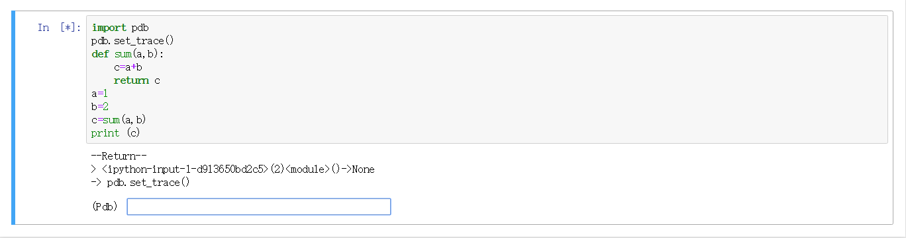
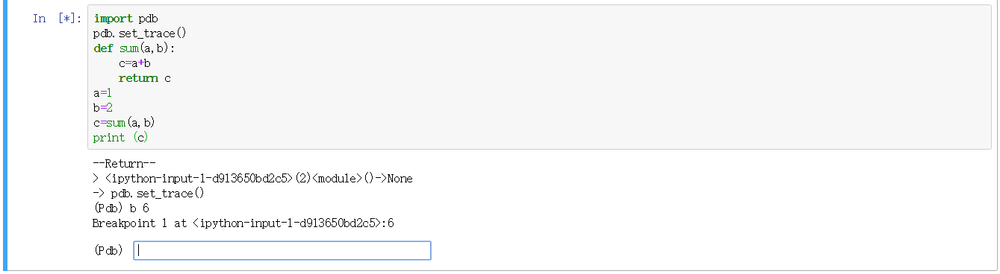
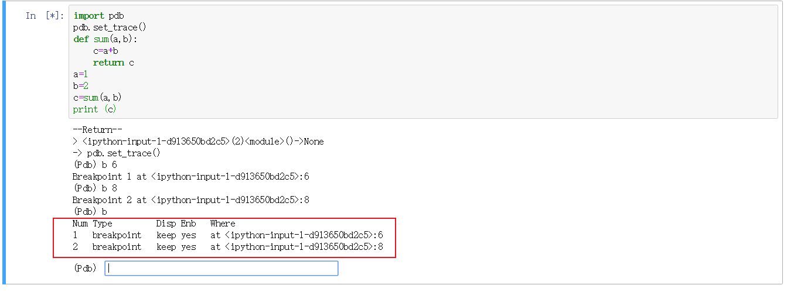

jupyter的调试是通过python自带的pdb库来实现的。
1.首先需要import pdb
2.然后在import后写入语句：
这个的作用是输入调试器。
示例：
打开notebook并新建一个执行文件，并输入以下代码：
import pdbpdb.set_trace()def sum(a,b): c=a+b return ca=1b=2c=sum(a,b)print (c)
按cntrl+enter运行。
会出现pdb调试界面：

断点：
输入：b 6

即在第6行打入断点。
再次输入:b 8，在第8行打入断点。
在打入断点后输入b可以查看当前程序的断点状态。

Num为断点的序号，Where为断点的位置。
输入c后程序会继续执行直到结束或遇到下一个断点。
调试命令:
完整命令 简写命令 描述
args a 打印当前函数的参数
break b 设置断点
clear cl 清除断点
condition 无 设置条件断点
continue c或者cont 继续运行，知道遇到断点或者脚本结束
disable 无 禁用断点
enable 无 启用断点
help h 查看pdb帮助
ignore 无 忽略断点
jump j 跳转到指定行数运行
list l 列出脚本清单
next n 执行下条语句，遇到函数不进入其内部
p p 打印变量值，也可以用print
quit q 退出 pdb
return r 一直运行到函数返回
tbreak 无 设置临时断点，断点只中断一次
step s 执行下一条语句，遇到函数进入其内部
where w 查看所在的位置
! 无 在pdb中执行语句